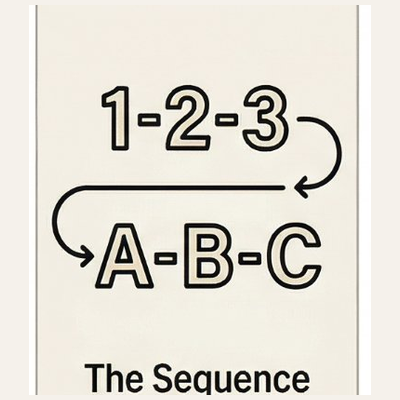
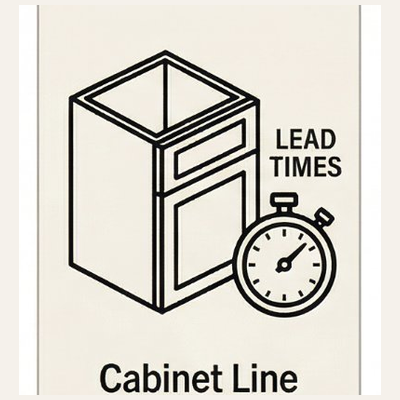
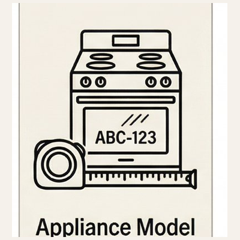
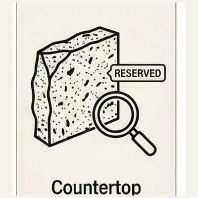
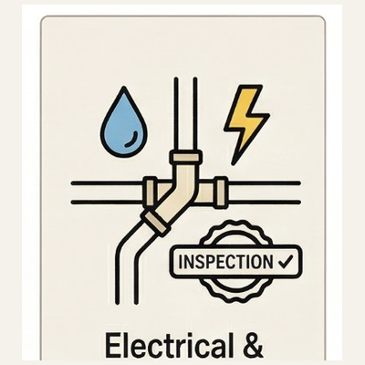
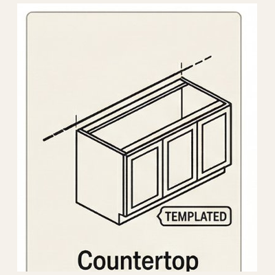
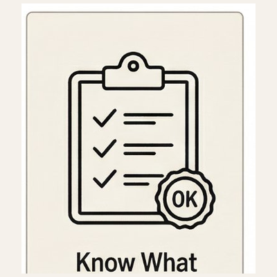
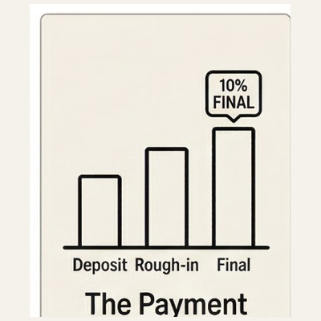

The sequence nobody explains — until something goes wrong. Cabinets before countertops. Appliances before cabinets. Lead times before demo. Here is the complete picture of what a kitchen remodel actually involves — before anyone shows up with a bid.
10 concepts this guide covers — from sequence logic to the payment schedule draw.
A kitchen remodel is not a single project. It is eight to twelve overlapping projects managed simultaneously — plumbers, electricians, cabinet installers, countertop fabricators, tile setters, painters, and finish carpenters all touching a kitchen in a specific order, often with dependencies that aren't obvious until they've been violated.
Understanding what a kitchen remodel actually involves — before anyone is hired, before anything is ordered, before demo day — is the single most protective thing a homeowner can do. This guide covers all of it.

Not all kitchen remodels are the same. Before a single contractor is called, a homeowner needs to know which level describes their project. The answer changes the budget, the timeline, the contractor type, and almost every decision that follows.
Cabinets stay. Layout stays. Everything cosmetic changes — paint, hardware, backsplash, countertops, possibly appliances. No plumbing moves. No electrical upgrades. Two to four weeks. A general handyman or finish carpenter can manage most of it.
Everything comes out — cabinets, countertops, flooring, appliances — but the layout stays. Sink stays where it is. Range stays. No walls move. The most common kitchen remodel. Four to ten weeks. Requires a general contractor or kitchen specialist.
Walls move. Plumbing relocates. Electrical reconfigures. This is a construction project that ends up as a kitchen. Eight to sixteen weeks minimum. Requires permits. Requires a licensed general contractor. Budget starts significantly higher.
Most homeowners start thinking they're doing a Level 2 and discover mid-project they needed a Level 3 plan. Knowing this upfront is the difference between a project that goes well and one that doesn't. Decide the level before anyone is called.
A kitchen remodel requires dozens of decisions. Most of them have dependencies — meaning one decision cannot be finalized until another one is made first. Making decisions out of order is one of the most common and costly mistakes in kitchen remodeling. It causes delays, change orders, and the specific frustration of undoing something already done.
This is the sequence. This is not a suggestion. This is the order that protects the project.
Where does the sink go? Where does the range go? Is the island staying, moving, or being added? Every trade — plumbing, electrical, HVAC, cabinet design — needs this answer before they can plan their work. Layout is decided first. Always.

Cabinets are the backbone of the kitchen. They determine countertop dimensions, appliance specifications, the lighting plan, and backsplash boundaries. Cabinet lead times run 6 to 16 weeks for semi-custom and custom lines. This decision needs to be made earlier than almost any other — and most homeowners make it too late.

Appliance specifications must be confirmed before cabinet design is finalized. A 36-inch range requires different cabinet configuration than a 30-inch range. A counter-depth refrigerator has different depth and height requirements than a standard one. Appliances drive cabinet dimensions — not the other way around.

Countertops cannot be templated until cabinets are installed. But the material needs to be selected and ordered early — especially for natural stone slabs, which require visiting a stone yard, choosing a specific slab, and reserving it. Select the material early. Template after cabinet install.
An undermount sink requires a specific cutout in the countertop — made at the fabricator based on the exact sink model. Changing the sink after the countertop is templated means a new template and a new countertop. Confirm the sink before the template appointment.
Kitchen flooring should be decided before demo — especially if it connects to adjacent spaces. If new flooring runs continuously from the kitchen into a hallway or dining area, the entire run needs to be planned together. Flooring under cabinets versus after cabinets changes the height relationship at toe kicks.
Recessed lighting locations, pendant placement over an island, and under-cabinet lighting all need to be planned before the electrician does rough-in. Moving a recessed light after drywall is closed is a repair project. Plan lighting with the electrical rough-in — not after it.
Once the countertop slab is chosen, the cabinet color is confirmed, and the hardware is selected, the backsplash ties them together. Choosing backsplash first and designing around it works occasionally. Choosing it last works almost always.
Cabinet hardware — pulls, knobs, hinges — seems small. It isn't. Hardware is ordered before installation and holes are drilled at that point. Changing hardware style after drilling means patching cabinet faces. Confirm hardware before installation day.
Choose paint after every other finish is confirmed. Paint is the one decision that can be changed most easily — but choosing it before countertops, cabinets, and flooring are confirmed means choosing in a vacuum. Wait.

Countertop templating happens after cabinet installation is complete — not before. This sequence is non-negotiable.
This is not a best-case scenario. This is a realistic schedule for a Level 2 kitchen remodel that goes reasonably well. Understanding the sequence protects the project — and the homeowner's expectations.
Cabinet order placed. Appliances specified and ordered or reserved. Countertop material selected and slab reserved if stone. Permits pulled if required. Contractor schedule confirmed. Demo date set. No demo happens before cabinet lead time is locked.

Existing cabinets, countertops, flooring, and appliances removed. Walls opened if needed for plumbing or electrical access. Existing conditions documented — this is when surprises behind walls are discovered. A contingency budget exists for this reason.
Plumber relocates or confirms supply and drain lines. Electrician runs new circuits, adds outlets to meet code — GFCI within six feet of the sink, dedicated circuits for major appliances. Installs recessed lighting rough-in. HVAC adjusted if layout changed. Inspections scheduled.

Rough-in inspections happen before walls close. This is non-negotiable — closing walls before inspection means opening them again. After inspection approval, drywall is patched or replaced. Skim coat and prime.
Cabinets arrive and installation begins — typically two to four days for an average kitchen. Upper cabinets first, then lowers. Filler pieces, trim, and crown molding follow. Cabinet installation must be complete before countertop template.
Fabricator visits after cabinet installation is complete to create the exact template. This is a precise measurement process. Sink is confirmed at this appointment. Template to fabrication to delivery typically runs one to two weeks depending on material and fabricator schedule.
Countertops installed. Sink set. Plumber returns to connect supply lines, drain, and garbage disposal. Backsplash tile installed after countertops are set. Under-cabinet lighting installed. Hardware installed on cabinets.
Appliances delivered and installed. Range connected — gas line by licensed plumber or gas fitter if applicable. Dishwasher connected. Refrigerator positioned. Final electrical connections. Punch list walk — every item that needs touch-up, adjustment, or completion documented and addressed.
Final paint after all trades are complete. Touch-up caulking. Final cleaning. Project complete. Twelve to thirteen weeks for a project that goes well — longer if cabinet lead times run long, if inspections are delayed, or if surprises behind walls add scope.

Electrical rough-in happens before drywall closes — and before inspection. This sequence cannot be skipped.

A homeowner who knows what a qualified kitchen contractor does is a homeowner who can tell the difference between one and the ones who cut corners. Here is what the right contractor does — without being asked.
Not after. Not never. A contractor who suggests skipping permits is asking the homeowner to absorb the legal and insurance risk of unpermitted work.
Line items, not summaries. "Kitchen remodel" is not a scope. Cabinet installation, countertop installation, plumbing rough-in, electrical rough-in, drywall repair, painting — each is a line item with a cost.
A contractor who orders cabinets without confirmed appliance model numbers is guessing. Guesses become change orders.
This is a coordination step that belongs to the contractor — not the homeowner. If a homeowner is being asked to manage this, the contractor is not managing the project.
Not a verbal promise. A document. A contractor without a written schedule is managing the project in their head — which means the homeowner has no visibility into what comes next.
Delays, discoveries behind walls, material backorders — a qualified contractor calls before the homeowner has to ask. If a homeowner is always asking for updates, they have the wrong contractor.
Every item documented. Every item resolved before final payment. A contractor who considers themselves done when the work is done — rather than when the homeowner is satisfied — is a contractor worth reconsidering.
These are the things most homeowners discover after demo — when addressing them is expensive and disruptive. Naming them here means a homeowner walks into every contractor conversation already knowing what to ask about.
The most common cause of kitchen remodel delays is cabinets arriving late — usually because they were ordered late. Semi-custom cabinets from quality lines run 6 to 10 weeks. Custom cabinets run 10 to 16 weeks. Order the day the design is approved. Not after demo. Not after the countertop is picked. The day the design is approved.
Every kitchen remodel has a non-zero chance of discovering something unexpected once walls open — old plumbing that needs replacement, wiring that doesn't meet code, a soffit hiding a structural beam, or moisture damage from a slow leak. A contingency budget of 10 to 15 percent of the total project cost is not pessimistic. It is responsible.
Countertops cannot be templated until cabinets are fully installed and level. Any contractor who suggests templating before cabinet installation is complete is setting up a fitting problem. The template is exact. The installation must be exact first.
Any project that moves plumbing, adds electrical circuits, or changes the layout of a kitchen requires a permit in most Ohio municipalities. A contractor who discourages permits is protecting themselves from inspection — not the homeowner. Unpermitted work creates problems at resale, with insurance claims, and with future contractors who discover it.
A kitchen remodel bid that is significantly lower than others is not a deal. It is a signal. Either scope was omitted, materials were substituted, labor was underestimated, or the contractor plans to make up the difference in change orders. Get three bids. Understand what is in each one. The right bid covers the full scope — not the lowest number.
Homeowners who haven't made finish selections before demo begins create their own delays. A kitchen cannot be tiled until the tile is on site. A countertop cannot be fabricated until the slab is selected. Make selections before demo day — not during the project.

Stone slab selection happens at a stone yard — you pick the specific slab, not just the material. This needs to happen before the fabricator can be scheduled.
These questions don't require construction knowledge to ask. They require only the willingness to ask them — and the knowledge that the right contractor will answer them without hesitation.
"Are you licensed and insured in Ohio? Can I see your certificate of insurance?"
Non-negotiable. General liability and workers' compensation. If a worker is injured in an uninsured contractor's employ, the homeowner's insurance is the backstop. Verify before signing anything.
"Will you pull all required permits for this project?"
The answer should be yes without hesitation. If there is hesitation — ask why. A contractor who avoids permits is avoiding inspections. Inspections protect the homeowner.
"What is your cabinet lead time and when will you place the order?"
This question reveals whether the contractor understands project sequencing. A contractor who hasn't thought about cabinet lead time hasn't built a real schedule.
"Who will be on site daily — you, a foreman, or subcontractors I haven't met?"
Many contractors sell the job and send a crew. Know who is actually running the work in the home. The person who showed up to the estimate is not always the person running the job.
"How do you handle surprises behind the walls?"
A good contractor has a process — they document, photograph, communicate, and present options before proceeding. A contractor who says "we just handle it" hasn't thought through it.

"What does your payment schedule look like?"Never pay more than 10 to 15 percent upfront. A contractor who requires 50 percent or more before work begins is using the homeowner's money to fund other projects. Standard is deposit at signing, draws tied to milestones, final payment at punch list completion.
"Can you provide references from kitchen projects completed in the last 12 months?"
Recent references. Not a portfolio of projects from five years ago. Call them. Ask specifically about communication, timeline accuracy, and how surprises were handled.
"What is your process for the punch list?"
A contractor who doesn't know what a punch list is, or who treats it as optional, considers the project done when they're done — not when the homeowner is satisfied. These are different things.
People need someone to talk to about their project before they need someone to sell them something. That's what Remodelry is. And it starts with Remi.
Remi is Remodelry's free AI intake companion — a 15-minute conversation that captures your specific kitchen project, your budget, your timeline, and what you need to know before anyone shows up. You'll receive a personalized First Look immediately after.
Then your Remodelry Concierge will be in touch within 24 hours. When they call, they'll already know your project — your scope, your priorities, your budget signal, even how you make decisions. You won't start from scratch. You won't get a sales pitch. You'll get someone genuinely on your side before any contractor shows up with a bid.
Talk to Remi — It's FreeFree · No obligation · Your Concierge calls within 24 hours, already knowing your project
Cabinet painting, refacing, countertops, backsplash, and full remodels. Select your city for services, pricing, and a free consultation.
Serving Lorain, Cuyahoga & Medina Counties. Free estimates. No obligation, no showroom pressure.
Remi is our free AI intake — about 15 minutes. It captures your full kitchen project: cabinet goals, layout constraints, budget range, and timeline. Your Remodelry concierge calls within 24 hours with your complete brief already in hand.
Talk to Remi — It's Free →Free · No account required · ~15 minutes
Fill this out and Bryon will call you within 24 hours to schedule a free in-home visit.
Check your email for a confirmation. Questions in the meantime:
(440) 252-1053